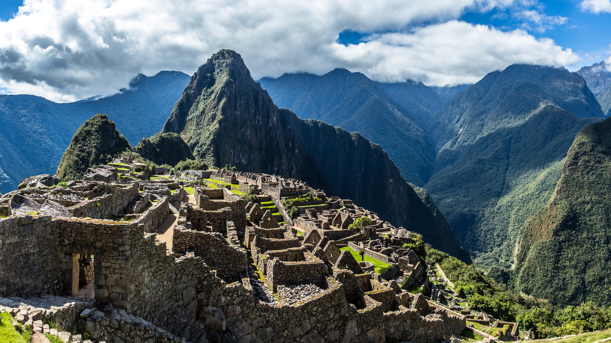
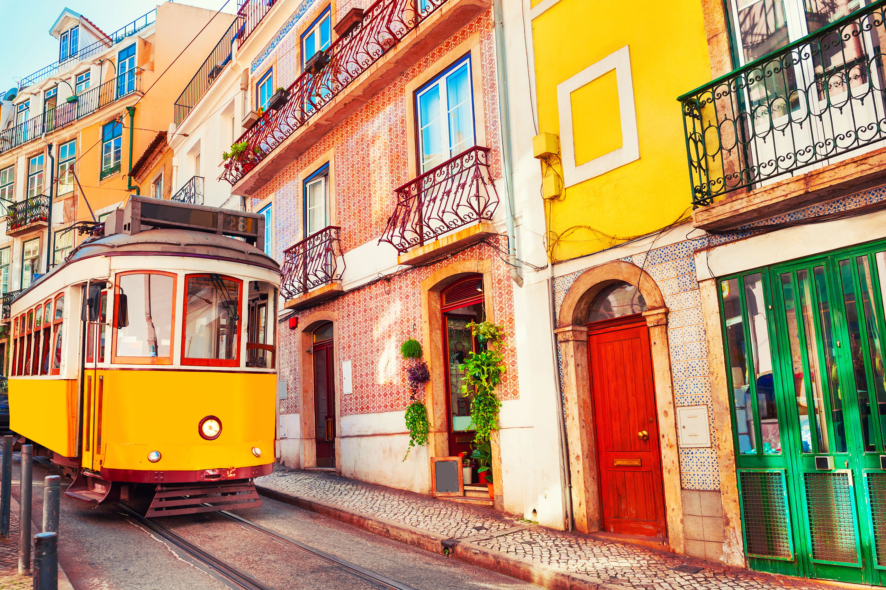
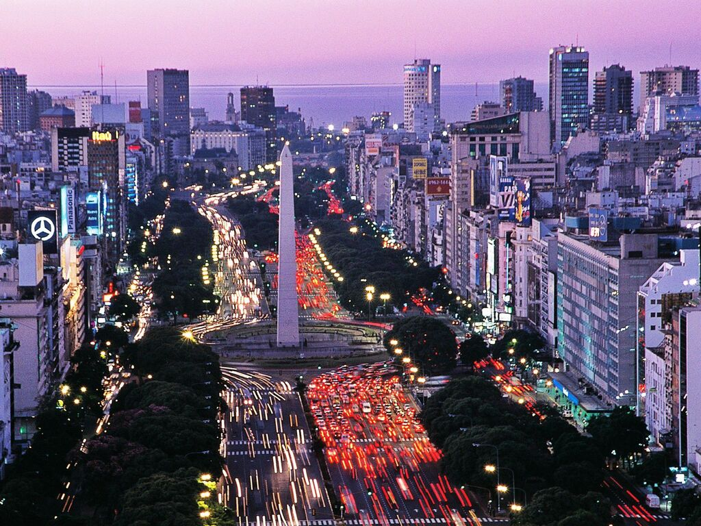
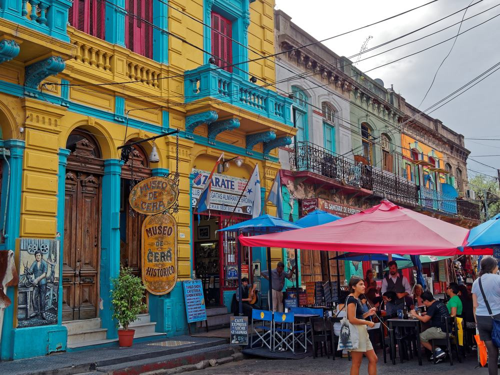
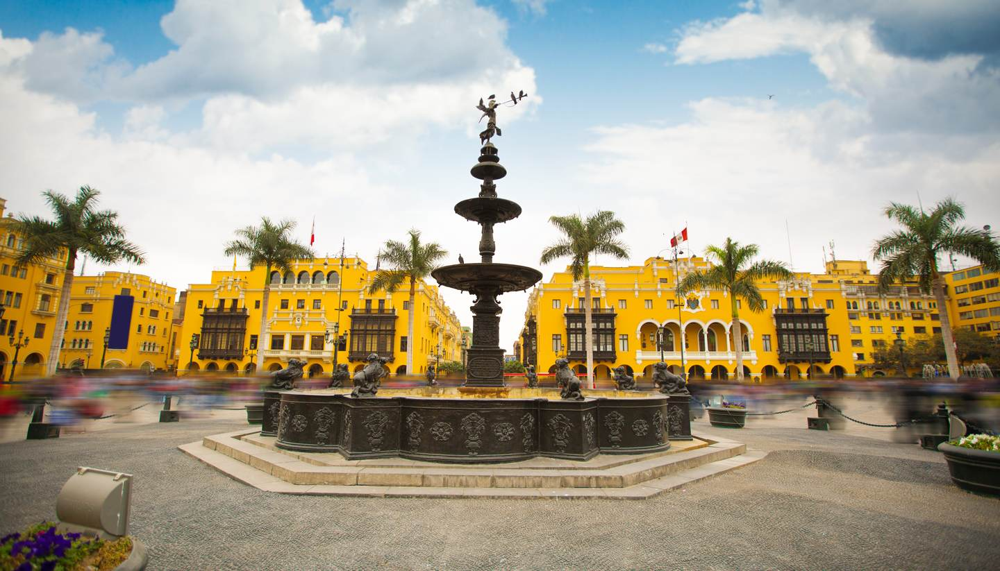
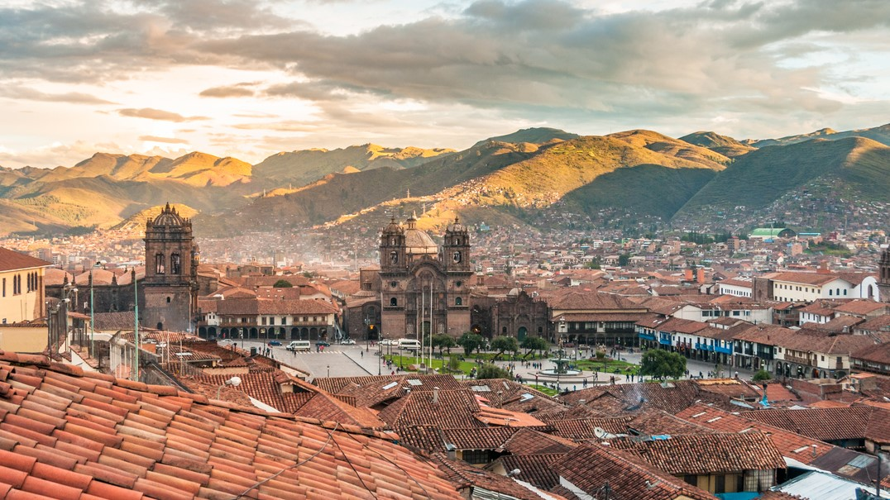
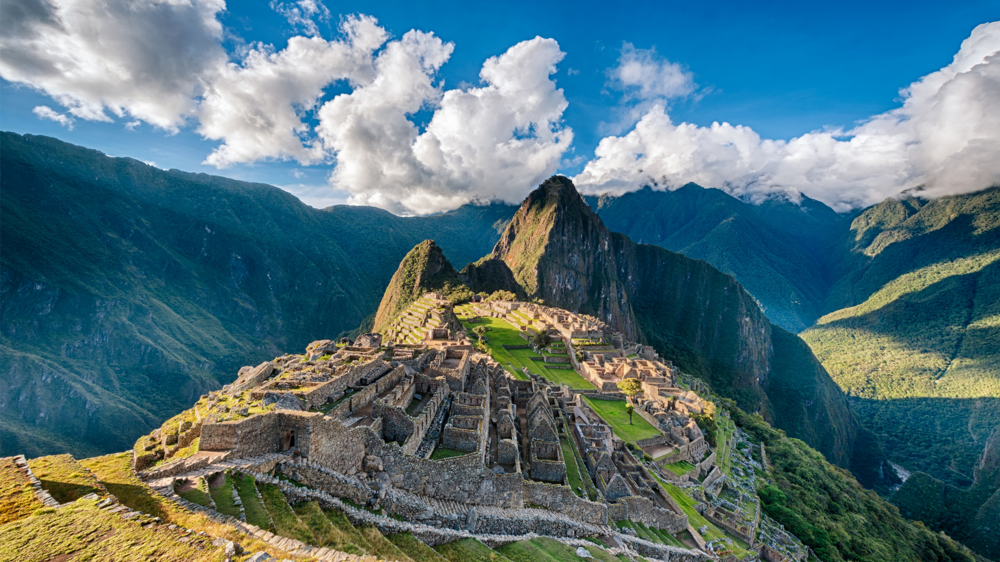
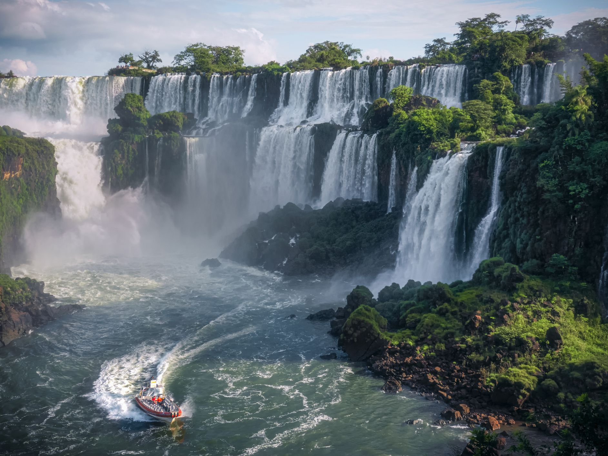
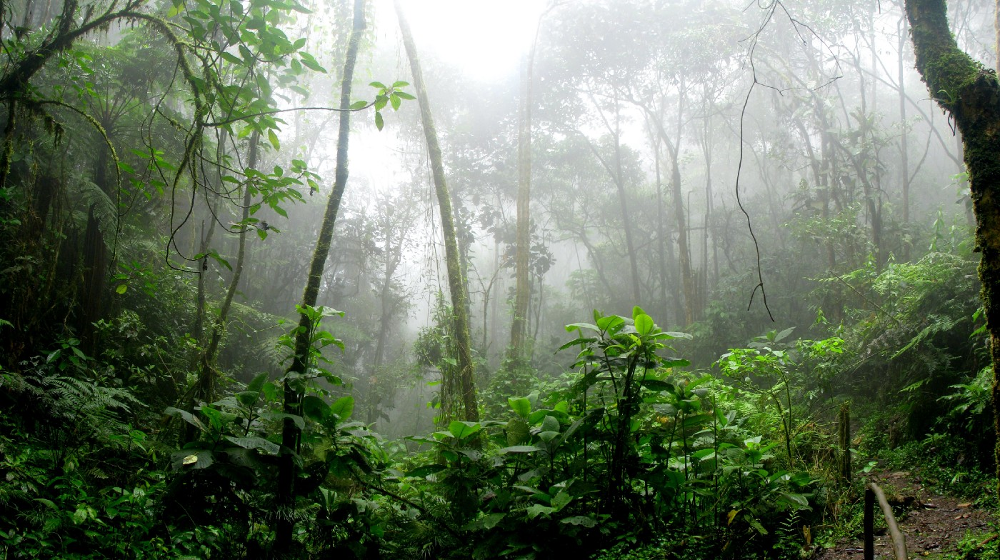
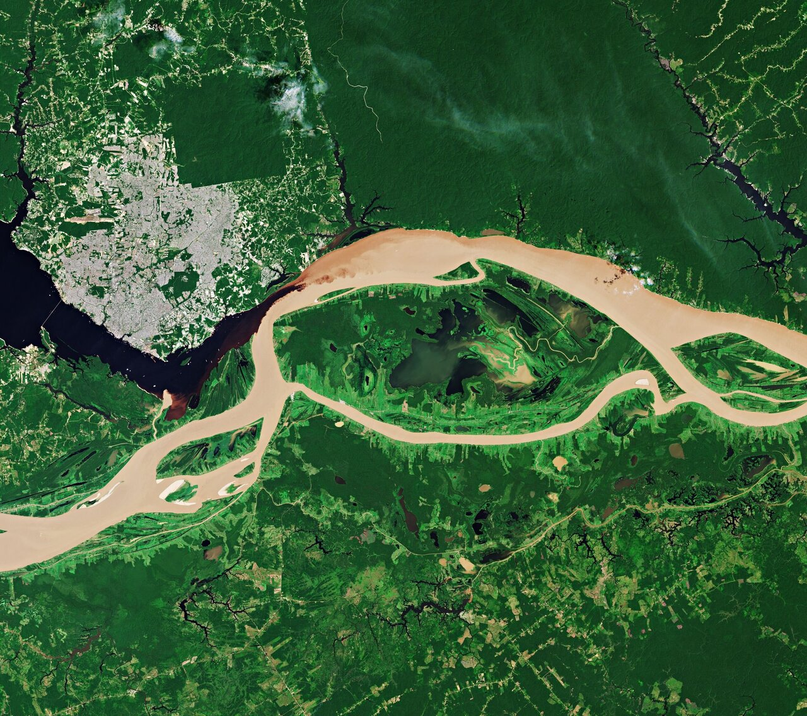

Mysterious South America
Duration - 14D/13N
|  |
The fourth-largest continent, South America is known popularly for its Amazonian rainforest, Incan ruins, Andean peaks, intoxicating nightlife, colonial towns, and white sand beaches. With this South America tour package from Thrillophilia, you can explore the best-kept secrets of this exotic country within two weeks. |
||||||||
|
South America’s geologic structure consists of two dissymmetric parts. In the larger, eastern portion are found a number of stable shields forming highland regions, separated by large basins (including the vast Amazon basin). The western portion is occupied almost entirely by the Andes Mountains.
The Andes—formed as the South American Plate drifted westward and forced the oceanic plate to the west under it—constitute a gigantic backbone along the entire Pacific coast of the continent. The basins east of the Andes and between the eastern highlands have been filled with large quantities of sediment washed down by the continent’s great rivers and their tributaries. |
 |
Highlights -
-
- Enjoy stunning panoramas from the top of Victoria Peak
- Full-day Disneyland tour with thrilling rides
- Ferry ride to Macau and city tour
Itinerary -
-
Day 1 - Arrial in Buenos Aires
Welcome to Buenos Aires, the Capital City of Argentina. As you arrive at the airport, our representative will greet you and will escort you to the hotel. Check-in at the hotel and spend the rest of the day leisurely.

In the evening, you can head out to explore the city and savour some local culinary dishes at the popular food joints. Return to the hotel for an overnight stay.
Day 2 - Buenos Aires Sightseeing Tour
After having a delicious breakfast, head out for a sightseeing tour of Buenos Aires. Today, you will be visiting some of the famous tourist attractions of the city such as Avenida de Mayo, the Plaza De Mayo and some important landmarks including the Casa Rosada, the Metropolitan Cathedral, the Cabildo and the Congress building.

Witness beautiful tTango paintings by local artists at Caminito street and make a stop at La Boca, to witness the mesmerizing views of Riachuelo River.
In the evening, shake a leg at Tango Dance lessons and enjoy a Tango Dance Show at Tango Porteño along with a delicious dinner. After dinner, return to the hotel for an overnight stay.
Day 3 - Arrial to Lima
As you arrive at Lima International airport, our representative will meet you and will assist you to the pre-booked hotel. Check-in at the hotel and get some rest. Later, head out to explore the old town of Lima, where you will find colourful colonial houses, monuments and cobblestone streets lined up with cozy cafes and shops.

You will also be visiting the Plaza de Armas, the Town Hall, the Palace of the Archbishop and the Cathedral.
Pay a visit to the Larco Herrera Museum and later, get back to the hotel for an overnight stay.
Day 4 - Leisure Day in Lima
This day of your trip is especially marked for your leisure. Enjoy your day at your own pace, you can explore the city on your own, go shopping at famous markets or avenues. You can also go for an optional excursion to visit Nazca Lines, a group of pre-Columbian geoglyphs which looks like hummingbirds and animals.
For this tour, you will be dropped off at Pisco airport to board an aircraft for a 90 minute aerial tour of Nazca lines.
After this tour, head back to the hotel for dinner and an overnight stay.
Day 5 - Cusco City Transfers
After having a buffet breakfast in the morning, get dropped off at the airport and board a flight to Cusco city. As you land in, our representative will receive you and escort you to the hotel. Complete the check-in formalities and head to your room for some relaxation.

In the afternoon, you will be taken to visit the archaeological sites and later visit the Temple of the Sun and the Koricancha temple in the Inca Empire. After the tour, get back to the hotel for an overnight stay.
Day 6 - Trip to Machu Picchu
After having a hearty breakfast, start your trip to Machu Picchu, a UNESCO world heritage site. Board a train to Aguas Calientes and then take a small bus to reach the ruins of Machu Picchu, also called the Lost City of the Incas. This historical place is a symbol of Incan Empire and is the most visited tourist destination of Peru. Here you will witness its marvelous architecture and stonewalled fortress which was way ahead of its time.

Reach the top and witness a picturesque view of the surrounding mountains. Start travelling back to Cusco for dinner and an overnight stay at the hotel.
Day 7 - Fly to Iguassu
After having a toothsome breakfast, check-out from the hotel and board a flight to Iguassu via Lima for the next phase of your journey. This quaint region is famous for its majestic waterfalls situated on the border of Brazil and Argentina. Upon arrival at the airport, our representative will escort you to the hotel.
Check-in at the hotel and get rid of your travel fatigue. Have dinner and an overnight stay at the hotel.
Day 8 - Iguazu Falls
After having a wholesome breakfast, set out to explore the Argentinian side of Iguazu falls. Head to Iguazu National Park and take a boat ride to reach the foot of the waterfall. You can also take a special train to reach The Devil’s Throat, an observation point which offers the best view of this magical waterfall.

After the visit, get dropped off at the hotel for dinner and an overnight stay.
Day 9 - Iguassu to Rio De Janeiro
After having breakfast, get ready for a trip to explore the brazilian side of Iguazu falls. Take a 1500 path to reach the Devil’s Throat along the Catwalk which ends near the viewpoint. From here, you will witness the splendid views of the Brazilian side of the fall. Towards the evening, check-out from the hotel and catch a flight to Rio de Janeiro.
As you reach, get picked up from the airport and proceed to your hotel. Check-in at the hotel and spend the evening leisurely. Have dinner and an overnight stay at the hotel.
Day 10 - Rio De Janerio Sightseeing Tour
After having a nutritious breakfast, set out to explore the world renowned attractions of this marvelous city. Proceed to Cosme Velho Train station to board the cogwheel train to Corcovado Mountain and witness the statue of Christ the Redeemer. Next, go for a drive near Red Beach, and from there board a cable car to reach the Urca Hill and SugarLoaf Mountain.
Later, visit Copacabana Beach and enjoy shopping in the downtown area. In the evening, witness a colourful Samba Show at the Plataforma. Return to the hotel for dinner and an overnight stay.
Day 11 - Manaus Transfers
After having breakfast, check-out from the hotel and take a flight to Manaus. Upon arrival you will be transferred to the lodge by a boat. Explore the monkey forest for an hour and hop on a motorized canoe along with a bilingual guide to visit a local resident’s house. Here, you will learn about the traditions and culture of the Amazonian natives.
Later, enjoy fishing and go for a night tour of the Amazon, here you may spot small alligators. Head back to the lodge for an overnight stay.
Day 12 - Amazon Rainforest Excursion
After having breakfast in the forest, embark on an Amazon Rainforest Excursion. Today we will go hiking in the rainforest and witness the local flora and fauna of the world's largest tropical forest. Learn the traits of surviving in the Jungle from your tour guide and later, reach back to the lodge in a canoe.

Next, enjoy a fishing tour, depending upon the season, you will learn to catch various species of fishes. After the tour, head back to the Lodge for an overnight stay.
Day 13 - Meeting of the Waters
After breakfast, board a double deck boat that will take you to the Negro River and along the shore of the city. Witness the views of the Amazonas Theater, the Port of Manaus and the stilt houses. Today you will discover the “Meeting of Waters”, a confluence of Rio Negro River and Rio Solimões Rivers. This confluence turns into the Amazon river.

Witness the two different rivers falling into one, without mixing due to the difference in water temperatures. After the tour, return to the lodge for an overnight stay.
Day 14 - Departure
After having breakfast, check-out from the hotel and get transferred to Manaus Airport for your return journey.
Inclusion -
Exclusion -
-
Meals which don't find their mention in the package are not included in the package.
Other personal expenses, entrance tickets, and hotel taxes (if any) will have to be borne by the travellers.